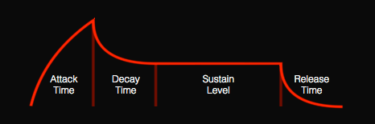

The ADSR (Attack Decay Sustain Release) node controls the envelope of a note. The control signal can be used for the note's volume, or to vary some other parameter such as a filter cutoff.

The envelope starts when the gate input becomes greater than zero and decays when the gate returns to zero. The envelope goes through four stages of attack, decay, sustain, and release each controlled by a knob.
The Attack knob specifies how long in seconds until the note reaches full volume after the gate becomes greater than zero.
The Decay knob specifies how long until (in seconds) the note fades to the sustain level which is, in turn, controlled by the Sustain knob.
The Release knob specifies how long (in seconds) until the note fades after the gate returns to zero.